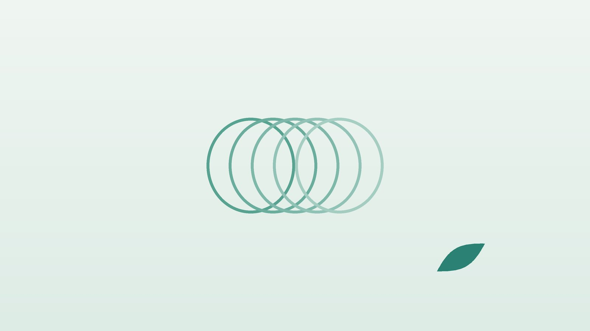

건강 칼럼 · 한방신경정신과
확인하고 또 확인해야 마음이 놓인다면, 강박증 이해와 한방 관리

나의 반복되는 생각, 이런 모습인가요?
- 문이 잠겼는지, 불이 꺼졌는지 여러 번 돌아가 확인한다
- 오염이 걱정되어 손을 지나치게 오래, 자주 씻는다
- 물건이 정해진 순서나 대칭으로 놓여야 마음이 편하다
- 원하지 않는 무서운 생각이 떠올라 떨쳐 내기 어렵다
- 특정 숫자나 동작을 정해진 만큼 반복해야 한다
- 이런 생각과 행동에 하루 한 시간 넘게 쓴다
이 체크리스트는 진단 도구가 아니라 상담이 필요한지 가늠해 보는 참고용입니다.
강박증은 단순히 꼼꼼한 성격과 어떻게 다른가요?
꼼꼼한 사람은 확인을 하고 나면 마음이 놓이지만, 강박증이 있으면 확인해도 '혹시'라는 불안이 금세 다시 올라와 같은 행동을 반복하게 됩니다. 본인도 지나치다는 것을 알면서 멈추기 어렵다는 점이 특징이며, 평생 유병률은 인구의 1~2% 정도로 알려져 있습니다. 대개 청소년기나 젊은 성인기에 시작하고, 스트레스가 클 때 심해졌다 덜해지기를 반복합니다.
영국 국립보건임상연구원(NICE) 강박장애 지침은 노출 및 반응 방지(ERP)를 포함한 인지행동치료와 선택적 세로토닌 재흡수 억제제(SSRI)를 표준 치료로 제시하고, 증상 정도에 따라 둘 중 하나 또는 둘을 함께 쓰도록 권합니다. 노출 및 반응 방지는 불안을 일으키는 상황에 조금씩 머무르면서 확인이나 씻기를 하지 않고 불안이 저절로 가라앉는 경험을 쌓는 훈련입니다. SSRI는 효과가 나타나기까지 수 주가 걸리고, 갑자기 끊으면 어지럼과 불안 같은 중단 증상이 생길 수 있어 줄일 때도 처방한 의사와 계획을 세워야 합니다.
정신건강의학과 진료가 먼저 필요한 신호
- 죽고 싶다는 생각이 들거나 자신을 해칠 것 같다
- 강박 행동 때문에 출근, 등교, 식사, 수면을 제대로 하지 못한다
- 손을 너무 씻어 피부가 갈라지고 피가 난다
- 우울감이나 공황 발작이 함께 심해졌다
- 아이에게 갑자기 강박 증상과 틱이 함께 나타났다
자해나 자살 생각이 있다면 자살예방 상담전화 109나 가까운 응급실에 바로 연락하세요. 일상이 무너질 정도라면 전문 치료가 먼저입니다.
한의학은 강박증을 어떻게 보나요?
한의학 고전에 강박증이라는 이름은 없지만, 『황제내경』은 '생각이 지나치면 기가 맺힌다(思則氣結)'고 하였습니다. 같은 생각이 머릿속을 맴돌며 풀리지 않는 모습을 기운이 한곳에 뭉쳐 돌지 못하는 상태로 본 것입니다. 생각을 주관하는 비(脾)가 지치면 걱정이 많아지고, 결단을 맡는 담(膽)의 기운이 약하면 쉽게 놀라고 의심이 많아진다고 보았습니다.
여기에 긴장이 오래 이어져 생긴 열과 몸에 쌓인 담(痰)이 마음을 어지럽히면 불안이 커지고 잠이 얕아진다고 해석했습니다. 그래서 한의학의 강박 관리는 뭉친 기운을 풀고, 놀란 마음을 진정시키며, 지친 몸의 바탕을 채워 불안을 견디는 힘을 기르는 데 초점을 둡니다.
나의 강박은 어떤 유형일까?
1. 심담기허(心膽氣虛) 겁이 많고 의심하는 유형
- 이런 분에게 많아요
- 작은 일에도 잘 놀라고 결정을 미루는 분
- 나타나는 모습
- 확인을 해도 믿기지 않아 몇 번이고 다시 본다
- 함께 오는 몸의 신호
- 두근거림, 잘 놀람, 얕은 잠
- 진찰에서 보이는 모습
- 혀가 담백하고 맥이 가늘고 약함
- 치료 방향
- 담의 기운을 북돋고 마음을 안정시키는 방향 (안신정지환 계열)
- 오늘부터 해 볼 것
- 확인 횟수를 한 번씩 줄여 가며 기록해 보세요.
2. 담열요심(痰熱擾心) 열이 차서 들끓는 유형
- 이런 분에게 많아요
- 긴장이 높고 기름진 음식을 즐기는 분
- 나타나는 모습
- 불쾌한 생각이 들끓듯 떠오르고 짜증이 많다
- 함께 오는 몸의 신호
- 가슴 답답함, 입이 씀, 잠들기 어려움
- 진찰에서 보이는 모습
- 설태가 누렇고 끈적하며 맥이 미끄럽고 빠름
- 치료 방향
- 담과 열을 걷어 마음을 맑히는 방향 (온담탕 계열)
- 오늘부터 해 볼 것
- 저녁 카페인과 늦은 야식을 끊어 보세요.
3. 간울기체(肝鬱氣滯) 생각이 맺혀 답답한 유형
- 이런 분에게 많아요
- 스트레스를 속으로 삼키는 분
- 나타나는 모습
- 같은 걱정이 하루 종일 맴돌고 한숨이 잦다
- 함께 오는 몸의 신호
- 옆구리 결림, 목 이물감, 소화 불량
- 진찰에서 보이는 모습
- 혀 가장자리가 붉고 맥이 팽팽함
- 치료 방향
- 뭉친 기운을 풀어 생각의 흐름을 돕는 방향 (시호가용골모려탕 계열)
- 오늘부터 해 볼 것
- 하루 20분 빠르게 걸으며 몸을 먼저 움직이세요.
4. 심비양허(心脾兩虛) 지쳐서 맴도는 유형
- 이런 분에게 많아요
- 오래 걱정하며 기력이 떨어진 분
- 나타나는 모습
- 강박에 시달린 뒤 녹초가 되고 의욕이 없다
- 함께 오는 몸의 신호
- 식욕 저하, 피로, 건망
- 진찰에서 보이는 모습
- 혀가 담백하고 맥이 약함
- 치료 방향
- 심과 비를 함께 채워 버틸 힘을 기르는 방향 (귀비탕 계열)
- 오늘부터 해 볼 것
- 끼니를 거르지 말고 잠자리 시간을 일정하게 지키세요.
한의원에서는 어떻게 진찰하나요?
- 증상 정도: 강박사고와 행동의 종류, 하루에 쓰는 시간, 생활에 미치는 영향을 여쭙니다.
- 치료 현황: 정신건강의학과 치료 여부, 복용 중인 약과 용량을 확인합니다.
- 몸의 신호: 수면, 소화, 두근거림, 피부 상태 같은 동반 증상을 봅니다.
- 설진·맥진: 기운의 뭉침, 담과 열, 허약의 비중을 판단합니다.
침·약침·한약 치료는 어떻게 하나요?
1. 침 치료
- 백회(百會)·사신총(四神聰): 정수리와 그 앞뒤좌우. 머리를 맑게 하고 들뜬 마음을 가라앉힙니다.
- 신문(神門): 손목 안쪽 주름의 새끼손가락 쪽. 마음을 안정시킵니다.
- 내관(內關): 손목 안쪽 주름 위 손가락 세 마디. 가슴의 답답함을 풉니다.
- 합곡(合谷)·태충(太衝): 손등 엄지와 검지 사이, 발등 엄지와 둘째 발가락 사이. 함께 써서 긴장을 풉니다.
강박증에 대한 침 연구는 매우 적어 효과를 단정할 수 없습니다. 침은 불안으로 굳은 몸과 수면을 돕는 보조 치료로 쓰며, 노출 훈련을 이어 가는 데 도움이 되도록 활용합니다.
2. 약침
긴장으로 뭉친 뒷목과 어깨, 등 근육에 약침을 시행해 몸에 쌓인 긴장을 덜어 줍니다.
3. 한약
유형별 탕약으로 불안과 수면, 소화 같은 동반 증상을 함께 다룹니다. SSRI 등 정신건강의학과 약을 드신다면 약 이름을 알려 주시면 확인해 처방합니다. 한약이 표준 치료를 대신하지는 않으며, 약을 임의로 줄이거나 끊지 마세요.
관리는 어떤 순서로 진행되나요?
- 정도 파악 강박에 쓰는 시간과 생활 지장을 확인하고, 깊은 경우 정신건강의학과 치료를 먼저 연계합니다.
- 첫 한방 진료 유형을 정하고 강박 일지(상황, 불안 점수, 반복 횟수)를 안내합니다.
- 4~8주 주 1~2회 침 치료와 탕약으로 불안과 수면을 다루며 반복 횟수의 변화를 봅니다.
- 유지기 스트레스가 큰 시기에 증상이 다시 늘지 않도록 생활 습관을 함께 점검합니다.
강박 증상은 좋아졌다 나빠지기를 반복하는 경우가 많아, 반복 횟수와 생활 지장을 기준으로 경과를 봅니다.
강박과 거리를 두는 생활 습관
- 미루기 연습: 확인하고 싶을 때 바로 하지 말고 5분 기다렸다가 불안이 어떻게 변하는지 지켜봅니다.
- 안심 구하기 줄이기: 가족에게 '괜찮지?'라고 반복해 묻는 횟수를 조금씩 줄입니다.
- 규칙적인 잠: 잠이 부족하면 불안이 커지므로 잠드는 시간을 일정하게 지킵니다.
- 몸 움직이기: 걷기나 가벼운 운동으로 머릿속에 머문 긴장을 몸으로 흘려보냅니다.
- 카페인·술 조절: 불안과 수면을 흔들 수 있어 줄여 봅니다.
다른 진료가 함께 필요한 경우
- 강박에 하루 몇 시간씩 쓰고 있다면 정신건강의학과에서 인지행동치료와 약물 치료를 받으세요.
- 우울이나 공황이 함께 있다면 함께 치료해야 합니다.
- 손 씻기로 피부염이 심하면 피부과 치료도 필요합니다.
- 가족이 확인을 대신해 주거나 강박에 맞춰 생활이 바뀌었다면 가족 상담도 도움이 됩니다.
자주 묻는 질문 Q&A
- Q1. 강박증은 성격 문제인가요?
- 성격이 아니라 치료가 가능한 질환입니다. 혼자 의지로 참기보다 도움을 받는 것이 좋습니다.
- Q2. 약을 먹으면 평생 먹어야 하나요?
- 좋아진 뒤 일정 기간 유지하다가 의사와 계획을 세워 줄여 갑니다. 임의로 끊지 마세요.
- Q3. 한약만으로 치료할 수 있나요?
- 증상이 가벼운 경우 한약 치료를 중심으로 관리하기도 하지만, 깊은 경우 표준 치료를 함께 받아야 합니다.
- Q4. 정신건강의학과 약과 한약을 같이 먹어도 되나요?
- 드시는 약을 알려 주시면 확인해 처방합니다.
- Q5. 가족은 어떻게 도와야 하나요?
- 대신 확인해 주기보다 불안을 견디는 연습을 함께 응원해 주세요.
- Q6. 나쁜 생각이 떠오르면 실제로 행동할까 봐 두려워요.
- 강박사고는 원치 않는 생각이며, 그 생각이 곧 행동하고 싶다는 뜻은 아닙니다. 전문 상담을 받아 보세요.
- Q7. 치료는 얼마나 받아야 하나요?
- 보통 4~8주 단위로 반복 횟수와 생활 지장을 비교합니다.
- Q8. 아이에게도 강박증이 생기나요?
- 아동·청소년기에 시작하는 경우가 많아, 증상이 보이면 소아청소년 정신건강의학과 평가를 받아 보세요.
참고 자료
- NICE clinical guideline CG31. Obsessive-compulsive disorder and body dysmorphic disorder: treatment, 2005 — 원문
- 『황제내경 소문(素問)』 거통론(擧痛論), 사즉기결(思則氣結)
- 질병관리청 국가건강정보포털 — 원문
※ 이 글은 일반적인 건강 정보이며, 개인의 상태에 따라 치료 방법과 결과는 다를 수 있습니다. 정확한 진단과 치료는 진료를 통해 결정됩니다. 침·약침 시술 후 드물게 멍, 통증 등이 생길 수 있습니다.